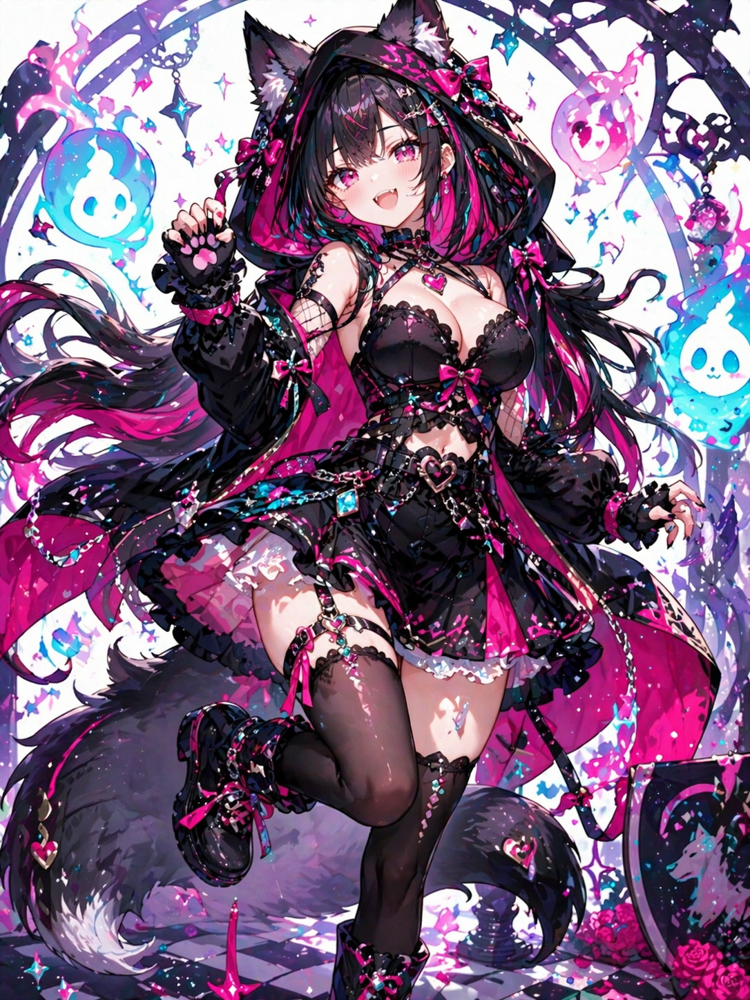

Yoi Sakura
宵サクラ
歌うことが大好きな、ちょっぴり小悪魔な妹系Vtuber。 お歌もゲームもおしゃべりも、全力で楽しんじゃう夜のサクラです。
- 誕生日
- 3月9日
- 身長
- 155cm
- 配信スタイル
- 歌枠 / ゲーム配信 / ASMR / 雑談
- ファンネーム
- 花弁ちゃん
- Fan Tags
- #宵サクラ / #花弁ちゃん見て / #宵色ノート


Yoi Sakura
歌うことが大好きな、ちょっぴり小悪魔な妹系Vtuber。 お歌もゲームもおしゃべりも、全力で楽しんじゃう夜のサクラです。